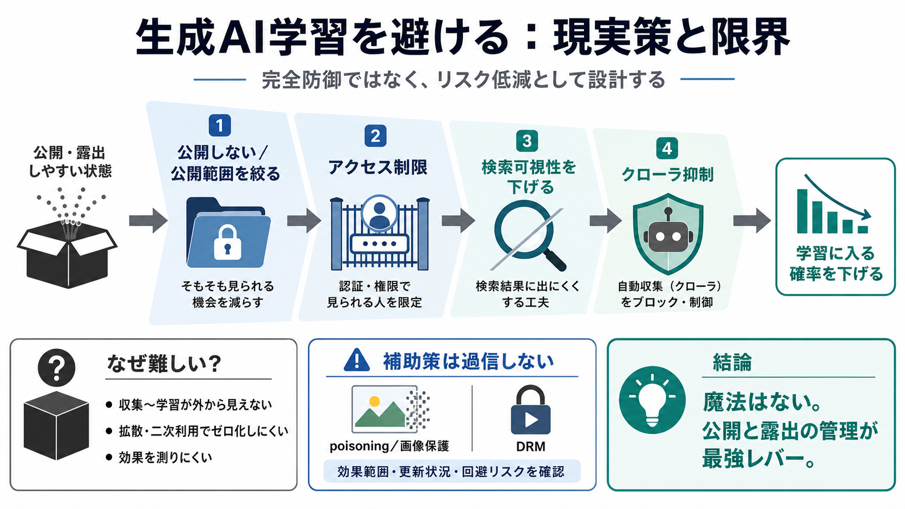

Blocking AI Scrapers: Can Your Privacy Policy Stop LLM Training?
Practical Steps to Reduce AI Scraping Risk in 2026 ... Update your privacy policy and terms of service to explicitly pro…

Practical Steps to Reduce AI Scraping Risk in 2026 ... Update your privacy policy and terms of service to explicitly pro…
What is AI/LLM data poisoning? Data poisoning is an adversarial attack where corrupted or biased data is inserted into a…
AI Poisoning Tools Have Arrived: New data poisoning tool lets artists fight back against generative AI “A new tool lets …
Promon's security team tests 10 leading AI models against OLLVM obfuscation, revealing where mobile app code protection …
Cloudflare has created a new product called AI Labyrinth. The idea is to protect data from being scraped by AI bots and …